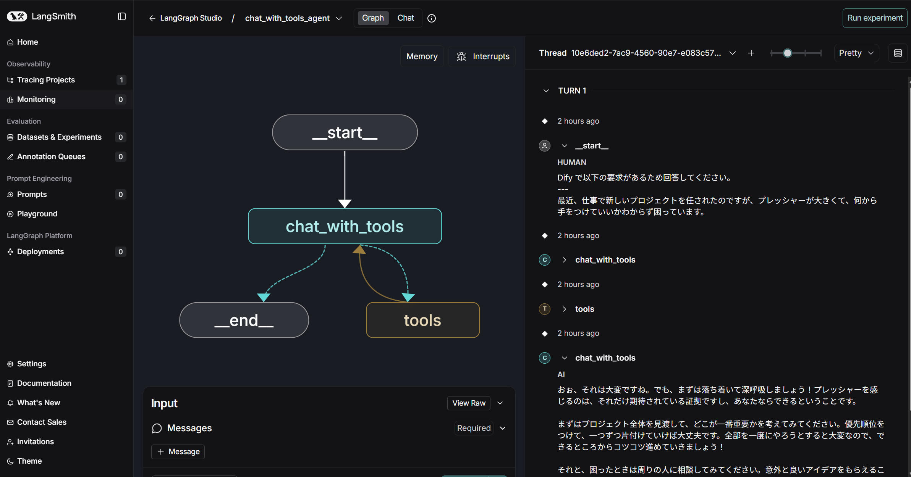
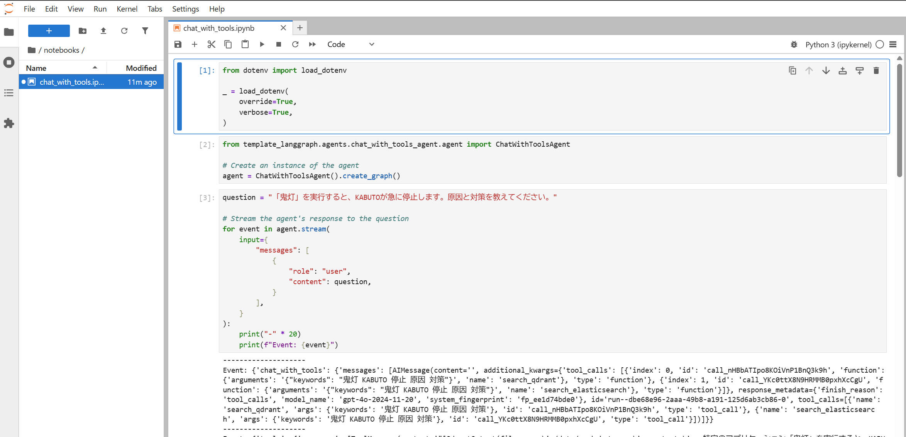
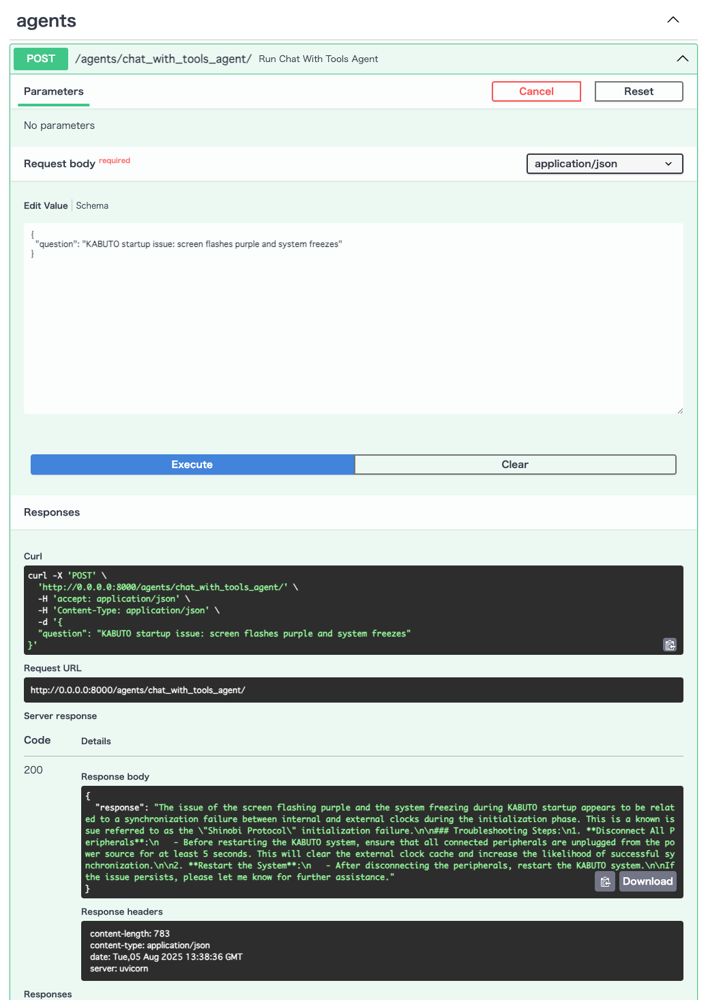

LangGraph AI エージェント テンプレート
LangGraphを使用して AI エージェントを構築するための包括的なテンプレートプロジェクト。様々なエージェントパターン、ツール統合、実際のユースケースを実演します。
LangGraph とは？
LangGraphはLangChainの上に構築されたフレームワークで、ステートフルなマルチエージェントワークフローを作成できます。単一のインタラクションを処理する従来のチャットボットとは異なり、LangGraph では以下のような複雑な AI システムを構築できます：
- 複数のターンにわたって会話状態を維持
- ツールと外部 API の使用
- 複雑な推論パターンの実装
- 複数の AI エージェントの協調
- 循環ワークフローと条件ロジックの処理
このテンプレートは、トラブルシューティングシナリオ用の架空のシステム「KABUTO」を使用して、これらの機能を実際の例で示しています。
プロジェクト概要
このプロジェクトは、シンプルなツール呼び出しエージェントから複雑なマルチエージェントシステムまで、異なる AI エージェントパターンとアーキテクチャを紹介しています。例では、エージェントが複数のデータソースから情報を取得し、構造化された回答を提供する方法を示すために、架空の技術サポートシナリオを使用しています。
このテンプレートが存在する理由
多くの AI アプリケーションは以下のことが必要です：
- 外部情報へのアクセス - LLM は特定のデータにアクセスできません
- ツールの使用 - テキスト生成以外のアクションを実行
- コンテキストの維持 - 以前のインタラクションを記憶
- 複雑なワークフローの処理 - タスクを管理可能なステップに分解
このテンプレートは、LangGraph を使用してこれらすべてのパターンの動作例を提供しています。
前提条件
- Python 3.13+
- uv - モダンな Python パッケージマネージャー
- GNU Make - 一般的なタスクの実行用
- Docker - ベクターデータベースの実行用（オプション）
- Azure
- Azure OpenAI - LLM API
- Azure Cosmos DB - データストレージ（オプション）
クイックスタート
1. 環境設定
# リポジトリをクローン
git clone https://github.com/ks6088ts-labs/template-langgraph.git
cd template-langgraph
# Python依存関係をインストール
uv sync --all-extras
# 環境設定を作成
cp .env.template .env
# .envを編集してAPIキー（Azure OpenAIなど）を設定
2. サポートサービスの開始（オプション）
完全な機能のために、ベクターデータベースを開始します：
# DockerでQdrantとElasticsearchを開始
docker compose up -d
3. データソースの初期化
Qdrant ベクターデータベースの設定:
uv run python scripts/qdrant_operator.py add-documents \
--collection-name qa_kabuto \
--verbose
Elasticsearch 検索インデックスの設定:
uv run python scripts/elasticsearch_operator.py create-index \
--index-name docs_kabuto \
--verbose
任意: 追加データソースの設定:
# Azure AI Search
make create-ai-search-index
# Azure Cosmos DB
make create-cosmosdb-index
# またはオペレータースクリプトを直接使用:
# uv run python scripts/ai_search_operator.py add-documents --verbose
# uv run python scripts/cosmosdb_operator.py add-documents --verbose
プロジェクト構造
コアコンポーネント
data/- 架空の KABUTO システム用のサンプルデータ（PDF、FAQ、トラブルシューティングガイド）template_langgraph/- すべてのエージェント実装を含むメイン Python パッケージnotebooks/- インタラクティブな例と説明付き Jupyter ノートブックscripts/- エージェント実行用コマンドラインツールagent_operator.py- プロダクションエージェント用メインランナーdemo_agents_operator.py- シンプルなデモエージェント用ランナー- データベース/検索オペレーター（
qdrant_operator.py、elasticsearch_operator.py、ai_search_operator.py、cosmosdb_operator.py） - LLM テストオペレーター（
azure_openai_operator.py、azure_ai_foundry_operator.py、ollama_operator.py） - その他ユーティリティ（
dify_operator.py、otel_operator.py）
エージェントの例（template_langgraph/agents/）
本プロジェクトには、各種 LangGraph パターンを示すエージェント実装が含まれます。CLI でグラフを PNG 出力（Deployment 参照）したり、ターミナル/Makefile から実行できます。
kabuto_helpdesk_agent/— 入門に最適。create_react_agentによる ReAct エージェント。主要概念: ReAct、ツール呼び出し、プリビルト。chat_with_tools_agent/— コア実装。ヘルプデスク相当の手組みグラフ。主要概念: グラフ構築、状態管理、ノード/エッジ。issue_formatter_agent/— 構造化出力。Pydantic で構造化データ抽出。主要概念: 構造化出力、検証、整形。task_decomposer_agent/— 計画と分解。複雑タスクを段階的に分解。主要概念: 計画、マルチステップ推論、条件分岐。supervisor_agent/— マルチエージェント協調。スーパーバイザーが複数の専門エージェントを調整。主要概念: 協調。news_summarizer_agent/— Web/YouTube 要約。取得 → 要約 → 通知。主要概念: 扇形サブタスク、Notifier/Scraper/Summarizer を差し替え。image_classifier_agent/— 画像分類。ローカル画像を分類し通知。主要概念: 画像 ×LLM、並列サブタスク。
デモエージェント（template_langgraph/agents/demo_agents/）
学習と実演用の追加シンプルエージェント：
weather_agent.py— シンプルなツール呼び出しエージェント。モック天気検索ツールを使った基本的な ReAct パターン。主要概念: ツール呼び出し、基本エージェントパターン。multi_agent.py— マルチエージェント協調。転送機能を使ったエージェント間の引き渡しを実演。主要概念: エージェント協調、ワークフロー転送。parallel_rag_agent/— 並列実行タスク分解。目標をタスクに分解し並列処理。主要概念: 並列処理、タスク分解、Send 操作。
サポートモジュール
template_langgraph/llms/: LLM ラッパー（Azure OpenAI、Azure AI Foundry、Ollama）template_langgraph/tools/: ツール実装- Azure AI Search（
ai_search_tool.py） - Azure Cosmos DB Vector Search（
cosmosdb_tool.py） - Dify Workflow（
dify_tool.py） - Elasticsearch 全文検索（
elasticsearch_tool.py） - MCP クライアント（
mcp_tool.py） - Qdrant ベクター検索（
qdrant_tool.py） - SQL Database ツールキット（DSN 指定時のみ有効、
sql_database_tool.py） template_langgraph/internals/: 内部ユーティリティ- Notifier（Mock/Slack）
- Scraper（Mock/HTTPX/YouTube transcript）
- Summarizer（Mock/LLM 構造化出力）
- Loader（CSV/PDF）、OTEL ヘルパー
サンプルコードの実行
オプション 1: LangGraph Studio（開発用推奨）
LangGraph Studioは、エージェントの開発とデバッグのためのビジュアルインターフェースを提供します：
uv run langgraph dev
これにより、以下が可能な Web インターフェースが開きます：
- エージェントワークフローの可視化
- 実行のステップスルー
- 状態遷移のデバッグ
- 異なる入力のテスト

オプション 2: Jupyter ノートブック（学習に最適）
説明と例付きのインタラクティブノートブック：
uv run jupyter lab
# http://localhost:8888 に移動し、notebooks/*.ipynbを開く

オプション 3: コマンドライン（クイックな開発）
ターミナルからエージェントを実行：
uv run python scripts/agent_operator.py run \
--name "chat_with_tools_agent" \
--question "KABUTO startup issue: screen flashes purple and system freezes" \
--verbose
エージェントの推論プロセスを示す出力例：
Event: {'chat_with_tools': {'messages': [AIMessage(content='', tool_calls=[
{'name': 'search_elasticsearch', 'args': {'keywords': 'KABUTO startup purple flashing freeze'}},
{'name': 'search_qdrant', 'args': {'keywords': 'KABUTO startup purple flashing freeze'}}
])]}}
Event: {'tools': {'messages': [ToolMessage(content='Found documentation about startup protocol...')]}}
Event: {'chat_with_tools': {'messages': [AIMessage(content='
### 問題分析
KABUTO起動時の紫画面点滅は「忍者プロトコル」初期化エラーを示しています...
### 解決策
1. **周辺機器の切断**: すべての接続デバイスを5秒以上取り外す
2. **外部クロックキャッシュのクリア**: クロック同期問題を解決
3. **KABUTOの再起動**: 必要に応じて「ドラゴンボール」ボタンを5秒以上押す
')]}}
オプション 4: FastAPI サーバー（プロダクションレディ）
FastAPI サーバーを実行して、エージェントを API として公開：
uv run fastapi run \
--host "0.0.0.0" \
--port 8000 \
--workers 4 \
template_langgraph/services/fastapis/main.py
# http://localhost:8000/docs を開いて Swagger UI 経由で API にアクセス
これにより、HTTP リクエストを介してプログラム的にエージェントと対話できます。

オプション 5: Streamlit（PoC デモ）
Streamlit アプリを実行して、エージェントを Web インターフェースとして公開：
uv run streamlit run \
template_langgraph/services/streamlits/main.py
Streamlit アプリのデモ：
オプション 6: Docker（本番デプロイ）
アプリケーションを Docker で実行すると、環境差による違いを減らし、一貫したデプロイが可能になります。ここではイメージのビルド、Streamlit のコンテナ実行、事前ビルド済みイメージの利用、マルチアーキテクチャ対応について説明します。
Docker イメージのビルド
# ローカルで Docker イメージをビルド
make docker-build
# または特定のタグでビルド
docker build -t ks6088ts/template-langgraph:latest .
Streamlit を Docker で実行
# Docker で Streamlit アプリを実行する（Makefile ターゲット）
make docker-run-streamlit
# または .env をコンテナにマウントして手動で実行
docker run --rm \
-p 8501:8501 \
-v ./.env:/app/.env \
ks6088ts/template-langgraph:latest \
streamlit run template_langgraph/services/streamlits/main.py --server.address 0.0.0.0
事前ビルド済みイメージの使用
# Docker Hub から実行
docker run --rm \
-p 8501:8501 \
-v ./.env:/app/.env \
ks6088ts/template-langgraph:latest \
streamlit run template_langgraph/services/streamlits/main.py --server.address 0.0.0.0
# GitHub Container Registry から実行
docker run --rm \
-p 8501:8501 \
-v ./.env:/app/.env \
ghcr.io/ks6088ts-labs/template-langgraph:latest \
streamlit run template_langgraph/services/streamlits/main.py --server.address 0.0.0.0
マルチアーキテクチャ対応
このリポジトリの Docker イメージは amd64 と arm64 両アーキテクチャ向けにビルドされています。これにより、Intel/AMD の x64 マシンや Apple Silicon（M1/M2/M3/M4）などの ARM 環境でも動作します。
コンテナを起動したら、ブラウザで http://localhost:8501 にアクセスして Streamlit アプリを確認できます。
追加の実行例
- Issue formatter（構造化出力）:
uv run python scripts/agent_operator.py run \
--name issue_formatter_agent \
--question "KABUTO にログインできない…（省略）" \
--verbose
- News summarizer（URL 扇形展開）:
uv run python scripts/agent_operator.py news-summarizer-agent \
--prompt "日本語で3行に要約してください" \
--urls "https://example.com/a,https://example.com/b" \
--verbose
- Image classifier（ローカル画像を分類）:
uv run python scripts/agent_operator.py image-classifier-agent \
--prompt "画像の内容を3行で説明してください" \
--file-paths "docs/images/fastapi.png,docs/images/streamlit.png" \
--verbose
デモエージェント実行例
- Weather agent（シンプルなツール呼び出し）:
uv run python scripts/demo_agents_operator.py weather-agent \
--query "日本の天気はどうですか？" \
--verbose
- Multi agent（エージェント協調）:
uv run python scripts/demo_agents_operator.py multi-agent \
--query "東京の天気はどうですか？" \
--verbose
- Parallel rag agent（タスク分解）:
uv run python scripts/demo_agents_operator.py parallel-rag-agent \
--query "ソフトウェア会社立ち上げのための情報収集戦略を計画する" \
--verbose
Makefile のショートカット（例: make run-chat-with-tools-agent, make run-issue-formatter-agent, make run-news-summarizer-agent, make run-image-classifier-agent）も用意しています。
実演されている主要概念
1. ReAct パターン（推論 + 行動）
現代の AI エージェントの基盤 - 何をすべきかを推論し、行動を取り、結果について推論する能力。
2. ツール呼び出し
エージェントが外部関数を使用する方法：
- データベース検索（Elasticsearch、Qdrant）
- API 呼び出し
- ファイル処理
- 計算実行
3. 状態管理
LangGraph が複数のインタラクションステップにわたってコンテキストを維持し、複雑なマルチターン会話を可能にする方法。
4. 条件付きワークフロー
エージェントの決定や外部条件に基づく分岐ロジックを作成するためのグラフ構造の使用。
5. マルチエージェントシステム
異なる専門知識を必要とする複雑なタスクを処理するための複数の専門エージェントの協調。
データソースの説明
プロジェクトは実際のシナリオを実演するために「KABUTO」というシステムについての架空のデータを使用しています：
data/docs_kabuto.pdf- 技術文書（ユーザーマニュアルをシミュレート）data/qa_kabuto.csv- FAQ データベース（過去のサポートチケットをシミュレート）data/docs_kabuto.md- 追加文書
この架空のデータには目的があります：AI エージェントが LLM の訓練データにない情報で動作できることを証明し、検索拡張生成（RAG）の価値を実演しています。
ツールと設定
既定のツールセットは template_langgraph/tools/common.py で定義され、検索/ベクター/ワークフロー/SQL（任意）/MCP などを含みます。.env の環境変数で有効化・設定します（.env.template 参照）。
- Azure OpenAI
AZURE_OPENAI_ENDPOINT,AZURE_OPENAI_API_KEY,AZURE_OPENAI_API_VERSIONAZURE_OPENAI_MODEL_CHAT,AZURE_OPENAI_MODEL_EMBEDDING,AZURE_OPENAI_MODEL_REASONING- Entra ID 認証の任意設定:
AZURE_OPENAI_USE_MICROSOFT_ENTRA_ID=true - Azure AI Foundry
AZURE_AI_FOUNDRY_INFERENCE_ENDPOINT,AZURE_AI_FOUNDRY_INFERENCE_API_VERSIONAZURE_AI_FOUNDRY_INFERENCE_MODEL_CHAT- Ollama（ローカル）
OLLAMA_MODEL_CHAT- Azure AI Search
AI_SEARCH_ENDPOINT,AI_SEARCH_KEY,AI_SEARCH_INDEX_NAME- Azure Cosmos DB（ベクター）
COSMOSDB_HOST,COSMOSDB_KEY,COSMOSDB_DATABASE_NAME,COSMOSDB_CONTAINER_NAME,COSMOSDB_PARTITION_KEY- Elasticsearch
ELASTICSEARCH_URL（既定http://localhost:9200）- Qdrant
QDRANT_URL（既定http://localhost:6333）- SQL Database（任意）
SQL_DATABASE_URI（未設定なら無効）- Dify
DIFY_BASE_URL,DIFY_API_KEY- MCP（Model Context Protocol）
MCP_CONFIG_PATH（JSON 設定。動的にツールをロード）- Notifier/Scraper/Summarizer 切替
NOTIFIER_TYPE（mock/slack）、NOTIFIER_SLACK_WEBHOOK_URLSCRAPER_TYPE（mock/httpx/youtube_transcript）SUMMARIZER_TYPE（mock/llm）
MCP ツールのクイックスタート
MCP_CONFIG_PATH を指定すると、MCP サーバーのツールが自動的にロードされます。ローカル検証:
make mcp-inspector
次のステップ
- 基本から始める:
kabuto_helpdesk_agentの例を実行 - デモエージェントを試す:
weather_agent、multi_agent、parallel_rag_agentでシンプルなパターンを探索 - 実装を理解する:
chat_with_tools_agentと比較 - 高度なパターンを探索: タスク分解器とスーパーバイザーエージェントを試す
- 独自のものを構築: このテンプレートをあなたのユースケースの出発点として使用
可観測性（任意）
OpenTelemetry 用のヘルパーがあります（template_langgraph/internals/otel_helpers.py）。簡易スパン動作確認:
uv run python scripts/otel_operator.py run -q "health check" -v
学習リソース
アーキテクチャの例
このテンプレートは複数の実証済みエージェントアーキテクチャを実演しています：
- ツール付きシングルエージェント - 基本的なツール呼び出しパターン（
weather_agent） - ReAct エージェント - ループでの推論と行動（
kabuto_helpdesk_agent） - 構造化出力エージェント - フォーマットされたデータの返却（
issue_formatter_agent） - 計画エージェント - 複雑なタスクの分解（
task_decomposer_agent） - マルチエージェントシステム - 複数エージェントの協調（
supervisor_agent、multi_agent） - 並列処理 - 同時タスク実行（
parallel_rag_agent）
各パターンは、いつどのように使用するかを理解するのに役立つ明確な例と文書で実装されています。